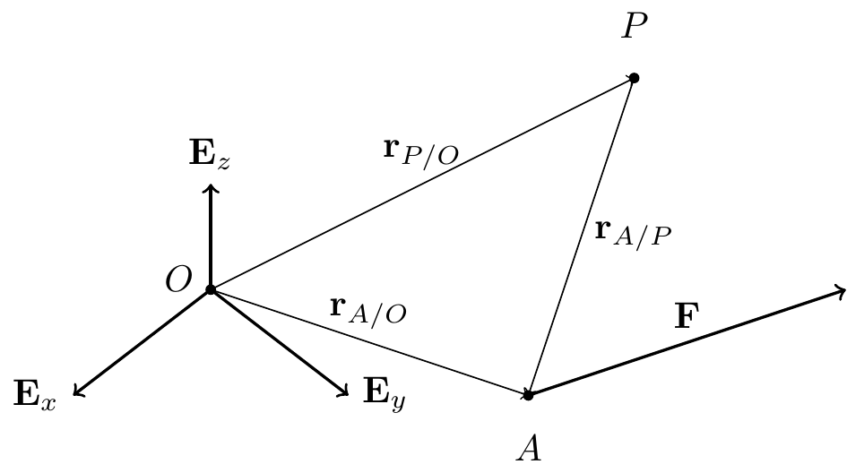
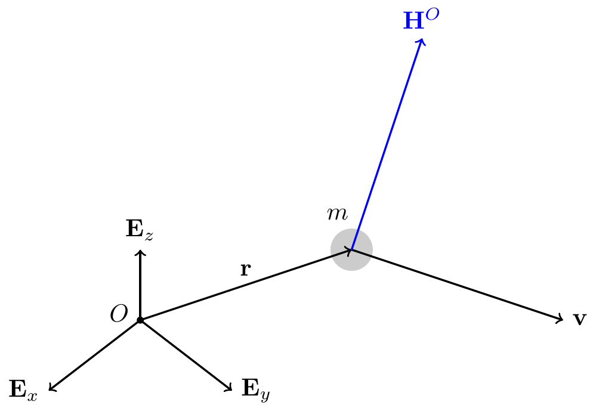
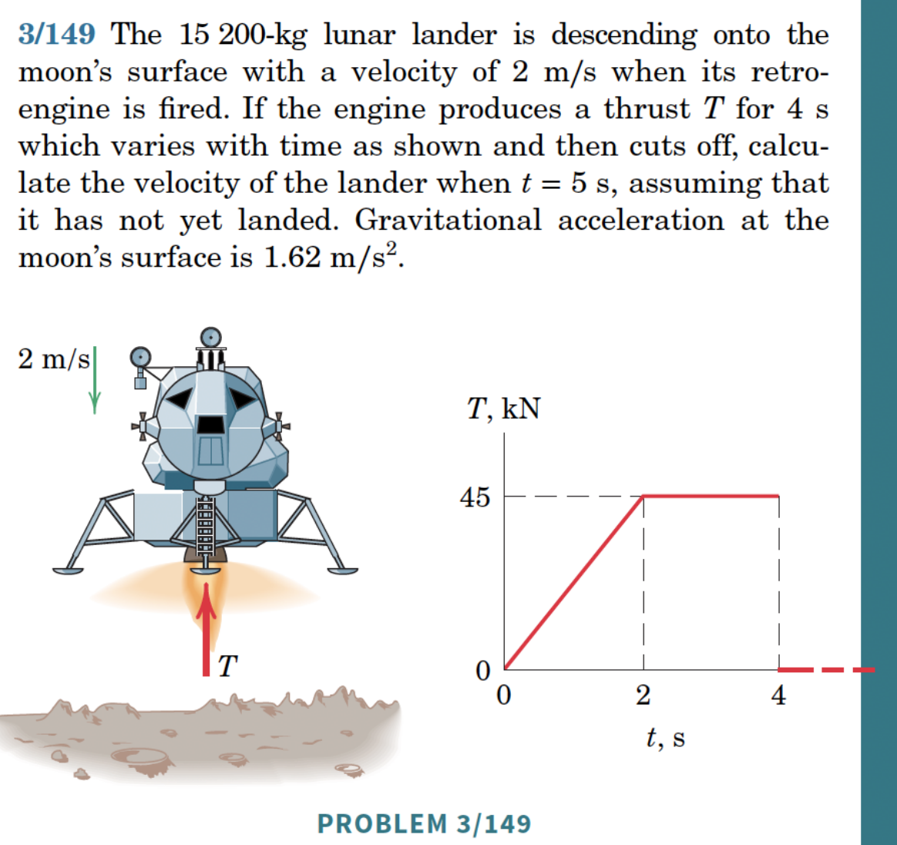
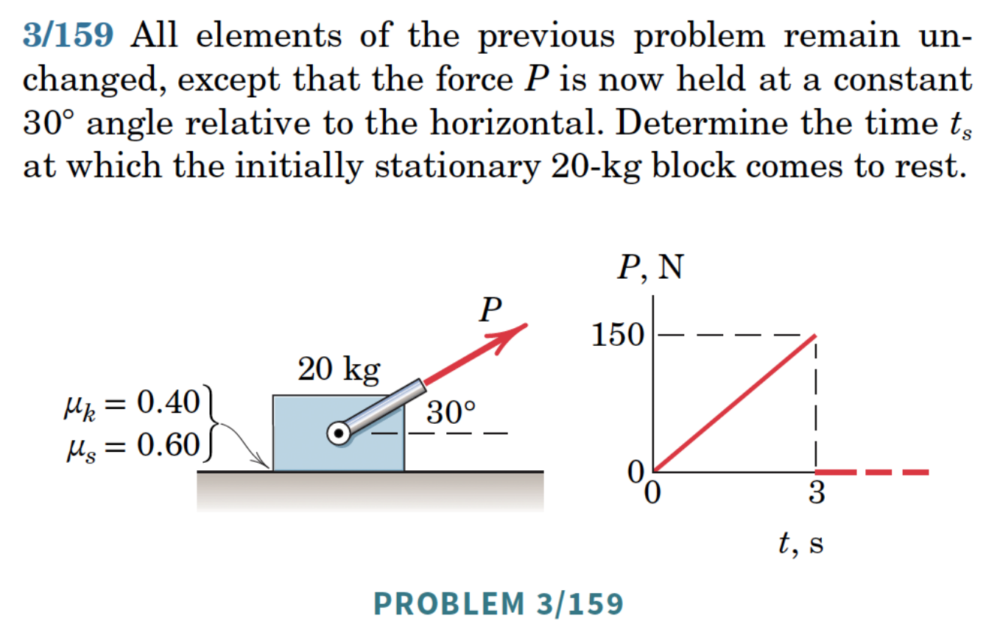
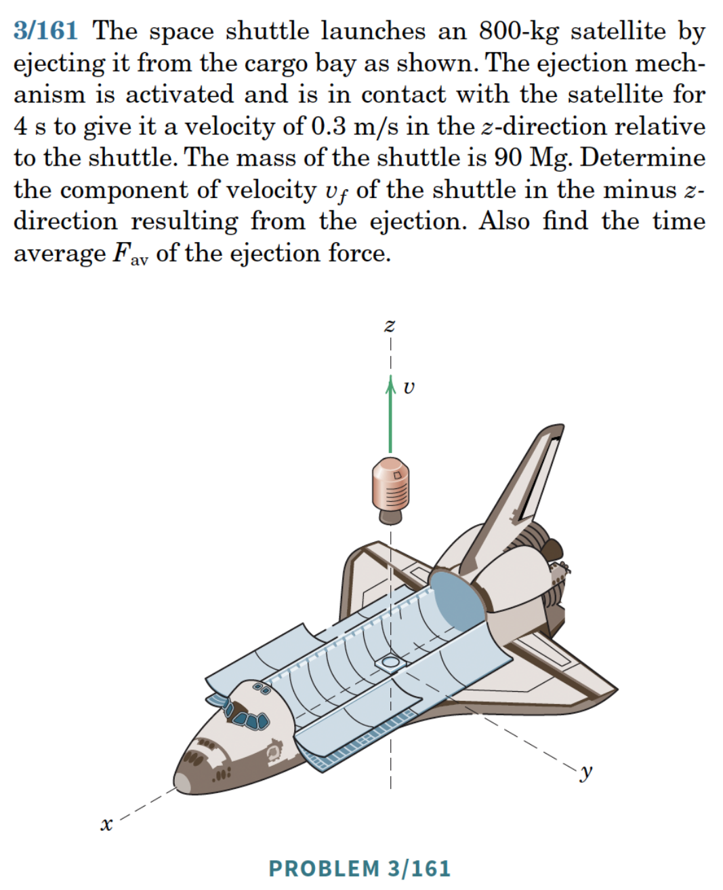
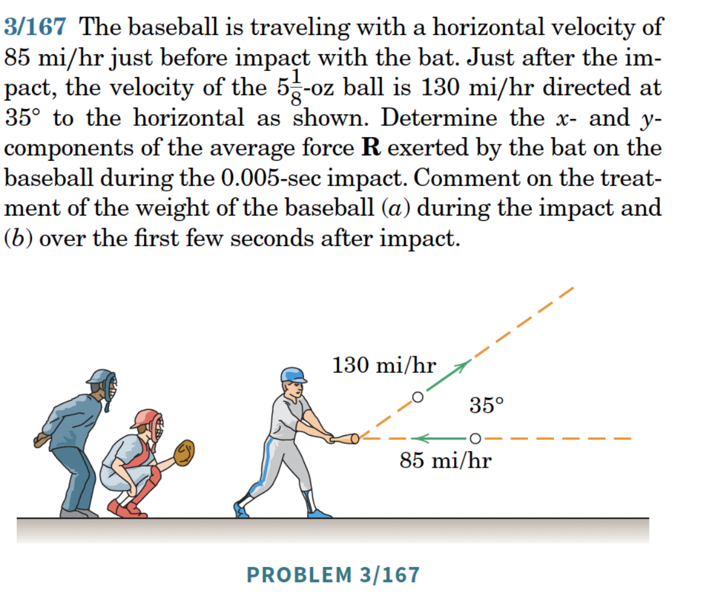
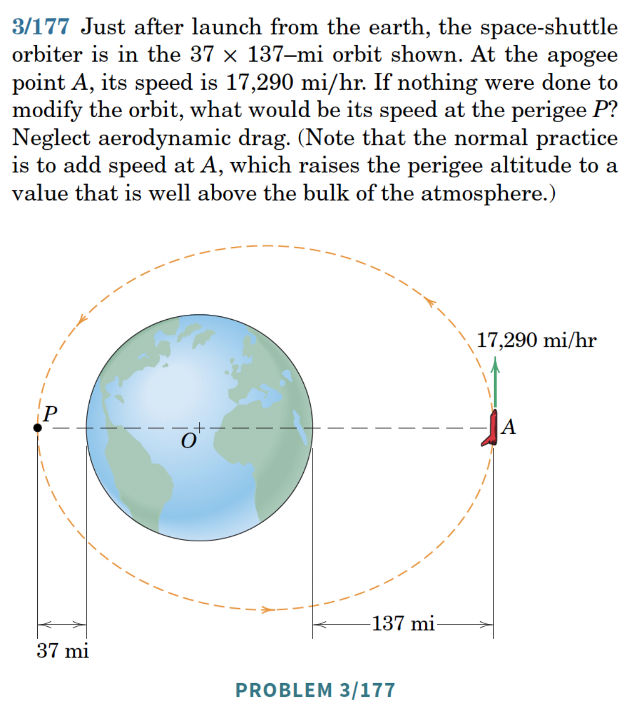
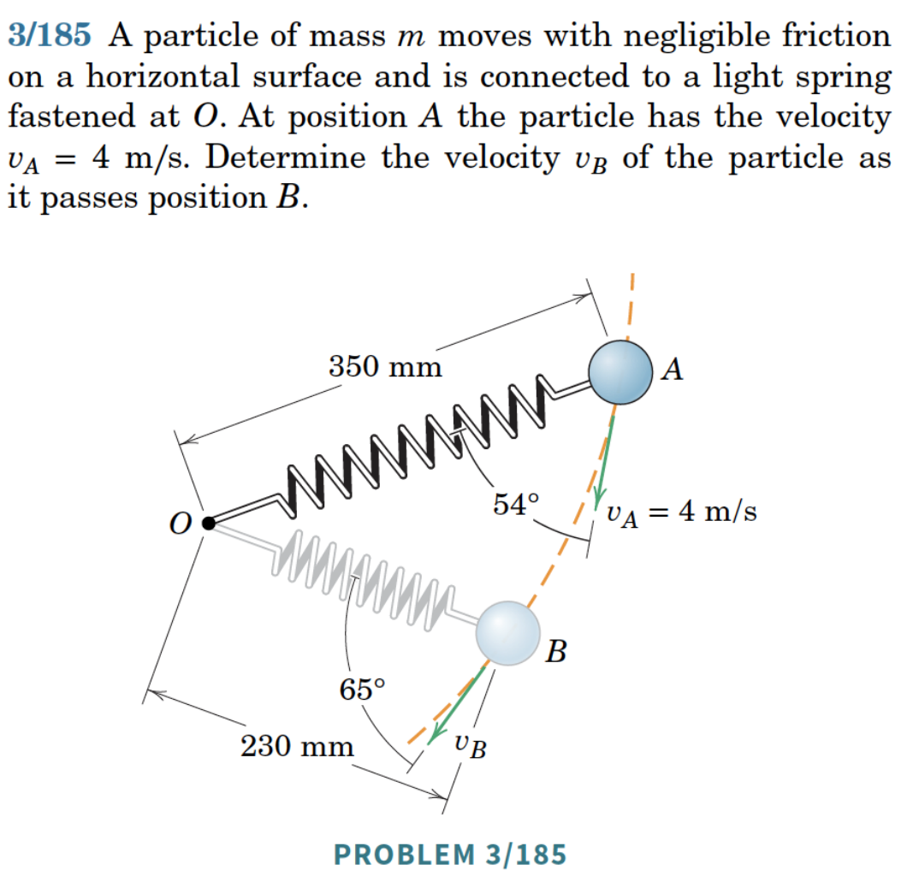
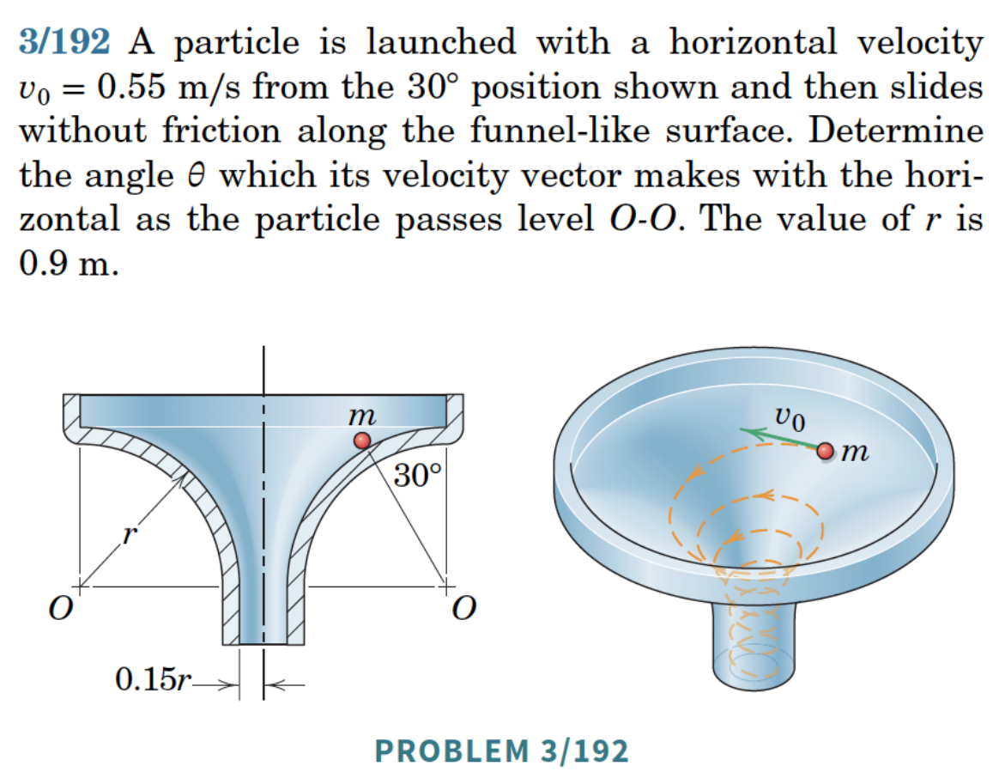

16 Momenta and Impulses of Particles
16.1 Linear Momentum and Its Conservation
Recall the linear momentum \({\bf G} = m{\bf v}\).
16.1.1 Linear Impulse and Linear Momentum
The integral form of the balance of linear momentum: \[\begin{align} {\bf G}(t_1)-{\bf G}(t_0) = \int_{t_0}^{t_1}{\bf F}\,dt. \end{align}\]
The time integral of a force is its linear impulse. This form is more general than \({\bf F}=m{\bf a}\) because it does not require \({\bf v}\) to be differentiable.
16.1.2 Conservation of Linear Momentum
TipThink!
Question: Under what conditions is the linear momentum of a system conserved?
NoteAnswer
…
TipThink!
Question: Under what conditions is the linear momentum of a system conserved in a direction \({\bf c}\)?
NoteAnswer
Suppose that the component of \({\bf G}\) in the direction of a given vector \({\bf c}\) is conserved: \[\begin{align} \frac{d}{dt}({\bf G}\cdot{\bf c}) = 0. \end{align}\] This means that \[\begin{align} \dot{\bf G}\cdot{\bf c}+{\bf G}\cdot\dot{\bf c} = {\bf F}\cdot{\bf c}+{\bf G}\cdot\dot{\bf c} = 0. \end{align}\] Thus, given a vector \({\bf c}\), \[{\bf G}\cdot{\bf c} \text{ is conserved if, and only if, } {\bf F}\cdot{\bf c}+{\bf G}\cdot\dot{\bf c} = 0.\] If \({\bf c}\) is a constant vector, \({\bf G}\cdot{\bf c}\) is conserved if, and only if, \({\bf F}\cdot{\bf c} = 0\). From the BoLM, this means that there is no force in this constant direction.
16.1.3 Example
WarningExample
Question: Is the linear momentum of a projectile conserved? In a certain direction?
NoteAnswer
With \({\bf W} = -mg{\bf E}_y\), linear momentum is conserved in the \({\bf E}_x\) direction (no force there) but not in \({\bf E}_y\).
16.2 The Moment of a Force
TipThink!
Question: How do you calculate the moment of a force about a point?
NoteAnswer
The moment of force \({\bf F}\) applied at \(A\) about point \(P\) is: \[\begin{align} {\bf M}^P = \lp{\bf r}_A-{\bf r}_P\rp\times {\bf F}. \end{align}\]
WarningExample
Question: Given \[\begin{align*} {\bf F} &= F_x{\bf E}_x+F_y{\bf E}_y+F_z{\bf E}_z,\\ {\bf r}_P &= -2{\bf E}_x+3{\bf E}_y+{\bf E}_z,\\ {\bf r}_A &= -{\bf E}_x+2{\bf E}_y-{\bf E}_z, \end{align*}\] calculate \({\bf M}^O\) and \({\bf M}^P\).
NoteAnswer
…
16.3 Angular Momentum and Its Conservation
Let \({\bf r}\) be the position vector of a particle relative to a fixed point \(O\), and \({\bf v}\) its absolute velocity. The angular momentum relative to \(O\): \[\begin{align} {\bf H}^O = {\bf r}\times m{\bf v} = {\bf r}\times{\bf G}. \end{align}\] In Cartesian coordinates: \[\begin{align} {\bf H}^O = m\lp y\dot{z}-z\dot{y}\rp{\bf E}_x+m\lp z\dot{x}-x\dot{z}\rp{\bf E}_y+m\lp x\dot{y}-y\dot{x}\rp{\bf E}_z. \end{align}\] In cylindrical-polar coordinates: \[\begin{align} {\bf H}^O = -mzr\dot{\theta}{\bf e}_r+m\lp z\dot{r}-r\dot{z}\rp{\bf e}_\theta+mr^2\dot{\theta}{\bf E}_z. \end{align}\]

16.3.1 Angular Momentum Theorem
From the BoLM: \[\begin{align} \dot{\bf H}^O = \frac{d}{dt}\lp{\bf r}\times m{\bf v}\rp = \underbrace{{\bf v}\times m{\bf v}}_{{\bf 0}}+{\bf r}\times m\dot{\bf v} = {\bf r}\times {\bf F}. \end{align}\] So \(\dot{\bf H}^O = {\bf M}^O\) (the angular momentum theorem).
16.3.2 Conservation of Angular Momentum
TipThink!
Question: Under what conditions is the angular momentum of a system conserved?
NoteAnswer
…
TipThink!
Question: Under what conditions is \({\bf H}^O\cdot{\bf c}\) conserved?
NoteAnswer
Suppose that the component of \({\bf H}^O\) in the direction of a given vector \({\bf c}\) is conserved: \[\begin{align} \frac{d}{dt}\lp{\bf H}^O\cdot{\bf c}\rp = 0. \end{align}\] Then, \[\begin{align} \frac{d}{dt}\lp{\bf H}^O\cdot{\bf c}\rp = \dot{\bf H}^O\cdot{\bf c}+{\bf H}^O\cdot\dot{\bf c} = \lp{\bf r}\times{\bf F}\rp\cdot{\bf c}+{\bf H}^O\cdot\dot{\bf c}. \end{align}\] Consequently, for a given vector \({\bf c}\), \[{\bf H}^O\cdot{\bf c} \text{ is conserved if, and only if, } \lp{\bf r}\times{\bf F}\rp\cdot{\bf c}+{\bf H}^O\cdot\dot{\bf c}=0.\] If \({\bf c}\) is a constant vector, then \({\bf H}^O\cdot{\bf c}\) is conserved if, and only if, \(\lp{\bf r}\times {\bf F}\rp\cdot{\bf c} = 0\).
16.3.3 Central Force Problems
WarningExample
Question: Consider the motion of the Earth and the Moon. What are the forces acting on the Moon? Are any quantities conserved?
NoteAnswer
Yes. Energy and angular momentum are conserved.
A central force problem is one where \({\bf F}\) is parallel to \({\bf r}\). The angular momentum theorem implies \(\dot{\bf H}^O = {\bf r}\times{\bf F} = {\bf 0}\), so \[\begin{align} {\bf H}^O = h{\bf h} = \text{constant} = {\bf r}\times m{\bf v}, \end{align}\] where \(h\) and \({\bf h}\) are constant.
The vectors \({\bf r}\) and \({\bf v}\) form a plane with constant unit normal \({\bf h}\). This plane passes through \(O\) and is fixed. Given initial conditions \({\bf r}(t_0)\) and \({\bf v}(t_0)\), we can choose a cylindrical polar coordinate system such that \({\bf E}_z = {\bf h}\), \({\bf r} = r{\bf e}_r\), and \({\bf v} = \dot{r}{\bf e}_r+r\dot{\theta}{\bf e}_\theta\). To do this, it suffices to choose \({\bf E}_z\) so that \[\begin{align} {\bf H}^O = h{\bf E}_z = {\bf r}(t_0)\times m{\bf v}(t_0). \end{align}\]
16.3.4 Kepler’s Problem
The gravitational force on a planet of mass \(m\) by the sun of mass \(M\) is conservative: \[\begin{align} \begin{split} & {\bf F} = -\frac{GmM}{\lnorm{\bf r}\rnorm^2}\frac{\bf r}{\lnorm{\bf r}\rnorm} = -\frac{\partial U}{\partial {\bf r}},\\ & U = -\frac{GmM}{\lnorm{\bf r}\rnorm}. \end{split} \end{align}\]
The BoLM in cylindrical polar coordinates yields: \[\begin{align} \begin{split} & m\ddot{r}-mr\dot{\theta}^2 = -\frac{GMm}{r^2},\\ & mr\ddot{\theta}+2m\dot{r}\dot{\theta} = 0. \end{split} \end{align}\]
Two conserved quantities: \[\begin{align} E &= \frac{1}{2}m(\dot{r}^2+r^2\dot{\theta}^2)-\frac{GMm}{r},\\ h &= {\bf H}^O\cdot{\bf E}_z = mr^2\dot{\theta}. \end{align}\]
Watch this video on Kepler’s laws.
16.3.5 Particle on a Smooth Cone
Show that \({\bf H}^O\cdot{\bf E}_z\) is conserved.
16.4 Summary
Linear impulse–momentum: \(\int_{t_A}^{t_B}\mathbf{F}\,dt = \mathbf{G}_B - \mathbf{G}_A\).
Angular momentum about fixed \(O\): \(\mathbf{H}^O = \mathbf{r}\times m\mathbf{v}\).
BoAM: \(\mathbf{M}^O = \dot{\mathbf{H}}^O\).
Conservation of \(\mathbf{G}\) if \(\mathbf{F}=\mathbf{0}\); conservation of \(\mathbf{H}^O\) if \(\mathbf{M}^O=\mathbf{0}\).
16.5 Exercises
The following problems are from Set 12 – Impulse and Momentum.
1. [MKB 03-149] Straightforward application of the linear impulse–momentum equation. (ans. \(v=1.218\) m/s down)

2. [MKB 03-159] The block is subjected to a time-varying force \(P(t)\) shown in the plot; \(P=0\) for \(t>3\) s. (ans. \(t_s=3.69\) s)

3. [MKB 03-161] Use Newton’s third law. Recall \(\int_{x_A}^{x_B}f(x)\,dx = F_{\mathrm{avg}}(x_B-x_A)\). (ans. \(v_f=0.00264\) m/s, \(F_{\mathrm{avg}}=59.5\) N)

4. [03-167] (ans. \(R_x=559\) lb, \(R_y=218\) lb)

5. [03-177] Central force problem – what quantities are conserved? (ans. \(v_P=17\,723\) mi/hr)

6. [03-185] (ans. \(v_B=5.43\) m/s)

7. [03-181] (ans. \(|H|=389\) N·m·s, \(|M|=260\) N·m)
8. [03-192] Label \(r\) as \(R\) and the requested angle \(\theta\) as \(\beta\). The particle moves on a surface of revolution \(z^2+(r-1.15R)^2=R^2\). Use conservation of total energy and \(\mathbf{E}_z\)-component of \(\mathbf{H}^O\). (ans. \(\theta=52.9^\circ\))
